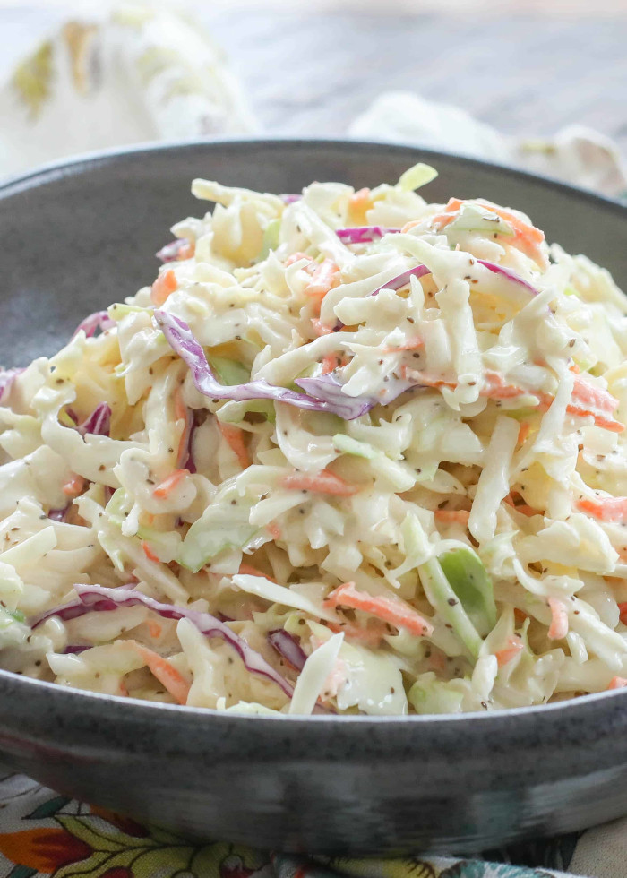

Coleslaw
Back

My coleslaw recipe
This is coleslaw I recreated after having it. Best use it for hot chicken
Ingredients
- Dole's coleslaw mix
- 3 tbs mayonnaise
- 2 tbs vinegar
- ground black pepper
- 1 1/2 tbs sugar
Steps
- Dump contents of Dole's coleslaw mix into large bowl
- Add mayonnaise, vinegar, ground black pepper, and sugar
- Mix and leave in fidge for 30 minutes